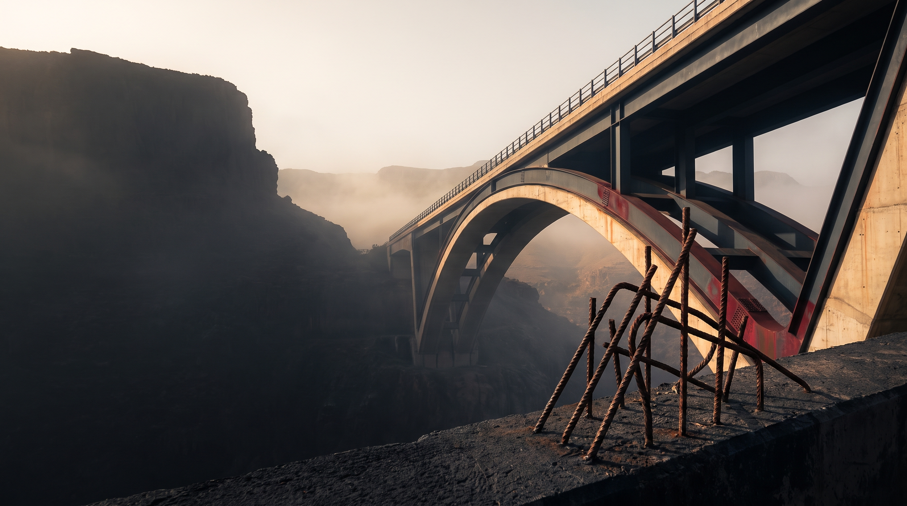

Unité de production
Unité de production
Références & portfolio
L’acier qui entre dans le réel.
Le terrain
Du site industriel à la structure.
Chaque projet est une rencontre entre la précision de notre production et les exigences de la construction.
Unité de production Construction
Construction Industrie
Industrie Acier de construction
Acier de constructionNos partenaires
Des relations qui font avancer.
TGCCpartenaire potentiel
ASMassociation des sidérurgistes
BTPmarché de la construction